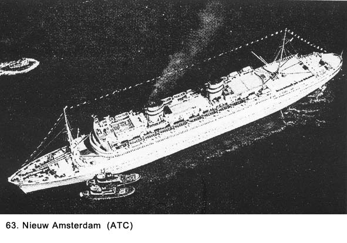
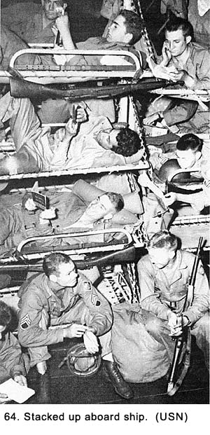
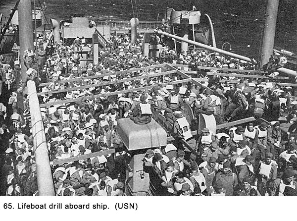
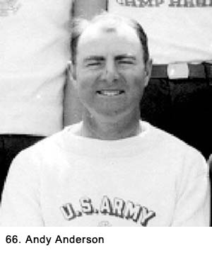
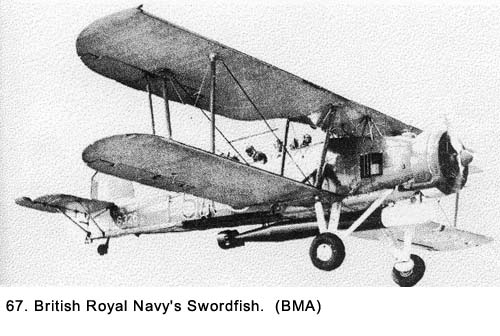

|
Table of Contents < - - - return Chapter 12 < - - - next
World War II Story by Robert F. Gallagher Chapter 11 - Life Aboard Ship England and America are
two countries separated by the same language. _______________________ A Luxury Liner In Name Only Our ship was the Nieuw Amsterdam (See Fig. 63), which had been the flagship of Holland's fleet. The British had confiscated it in a neutral port when the Germans invaded Holland.  A luxury ocean liner before the war, it had been made into a sterile troop ship. Gone were the fine dining rooms, ornate bars, lavish staterooms, oversized chandeliers, thousands of deck chairs, and all other luxuries and frills. The elaborate furniture and fixtures had been stripped out of her and stored for better days. She had been refitted with the bare essentials. The new version of the ship was intended to achieve one goal only-store as many troops as possible. During peacetime, the Nieuw Amsterdam carried 1,187 passengers. As a troop carrier, she carried eighty-six-hundred men, seven times the number of peacetime passengers. At the time of our crossing, she was the fifth largest passenger ship in the world. Built in 1938, she weighed 36,667 gross tons (compared to the Queen Mary's 81,237); seven-hundred-fifty-eight feet long and eighty-eight feet wide; and traveled at a speed of twenty-one knots.1 Even though she was a very large ship, the Queen Mary dwarfed her. A British crew was manning the ship at the time of our boarding; however, we did not realize the significance of this until later. It would mean we would be getting food on the trip prepared under the supervision of English cooks. We would learn to hate the food they prepared with a passion. I was one of approximately five hundred men packed into a room, located at the bow of the ship that had been the cinema during peacetime. When Joe Bernal commented, "We're packed in like sardines," someone responded, "Yeah, everything but the oil." (See Fig. 64) There were steel stanchion pipes extending from the roof to the floor. The bunks were attached to the pipes by chains and were stacked eight high in some areas. A bunk was two feet wide by six feet long and consisted of a pipe frame with a piece of canvas strung inside it. On one side, the bunks abutted each other, and on the other side there was a two-foot-wide aisle. The bunks touched head to toe. If you met someone while walking in the aisle, you had to turn sidewise and squeeze past him. Even when someone was sitting on his bunks with his feet and head sticking out in the aisle, there had to be a little dance where he pulled in toward his bunk while you weaved around him. It was also difficult to maneuver into a bunk to lie down. You had to climb up to your location using the bed frames as a ladder, get into a horizontal position, and then slide in like closing a drawer. The procedure required a movement of the arms and hands resembling a monkey swinging through the trees grabbing for anything solid to hang on to. Not only was the space for each man small, but we also had to stow all our gear in the bunk with us. That included our steel helmet, gas mask, backpack, duffel bag, overcoat and blankets. Some men kept their rifles in their bunks but most of us hung them from the pipe frame of our cot out in the aisle. This produced another obstacle and further reduced the clearance there. With all that equipment in the bunk with us, we were limited to sleeping in only one position. Most of us slept on our backs with some of our equipment tucked under our knees and more under our head for a pillow. It was not the most comfortable place to be. I created a new understanding of the word claustrophobic. We could not leave the ex-cinema except to go to the latrine, to chow when scheduled, or for an occasional assigned time up on deck when the sea was calm. On Monday, December 4, 1944, at about noon, someone came into the converted cinema and announced tugboats were pulling the ship away from the dock. We could not feel the movement and when it went on its own power, we did not hear the engines. They were at the opposite end of the ship, a long distance away. We were told we could go up on deck to see the New York skyline. When we passed the Statue of Liberty in the harbor, I was asleep down below in my bunk. I was too tired from the nightlife in New York City to make the trip topside. I hoped to see it on the return trip. That evening, I could almost hear the hostess I met out on the dance floor at the Stage Door Canteen asking some soldier or sailor, "Did you see the movie Stage Door Canteen?" The first morning out, we were allowed up on deck for fifteen minutes. To our amazement, we saw land off our starboard side that told us we were headed south. We wondered if we were headed to the Pacific Theater of Operations (PTO) by way of the Panama Canal, but we soon turned northeast, picking up the Gulf Stream and headed toward Europe. We had no warship escort as far as we knew, but, as usual, nobody told us anything. We were not even sure that our destination was the European Theater of Operations (ETO). While we were up on deck, we observed men from A Battery who were assigned to man the ships antiaircraft guns. They also checked everyone who went up on deck during the night to see if they had cigarettes or a lighter with them. If they did, the material had to be checked until they were ready to go below. There was a complete blackout enforced on deck. We felt sorry for the men with this duty because we knew they would be exposed to some very cold weather. Later, as we began to feel the rigors of our densely packed quarters, we envied them. At least they were getting fresh air and an open atmosphere. On that first day, everyone was trying to be cheerful, but the happy feelings were beginning to fade as the tight quarters restricted even the smallest amount of movement. The second day, they took us up on deck for lifeboat drill (See Fig. 65). Each man was given a life preserver to wear that had a small battery-operated light on it. We could see storm clouds moving toward us, and we knew we were in for rough seas. As we stood on deck, we made bets there wasn't even half enough capacity in those lifeboats to accompany all the men on the ship. While we made light of the situation, we were all worried about the German submarine threat and wondered if it was as diminished as we were told.  There was no ship store, library, or recreation area we could visit, so we were confined to our sleeping quarters. Because there was so little room in the aisles, we spent most of our time in the bunks lying in just one position - the only position available. We passed around paperback novels that we read with some difficulty. The light was poor in the bunk area, and we had to lean out into the aisle to see clearly. It was not comfortable to do so and it opened us up to being hit by someone passing down the aisle. Some men spent time writing letters to their loved ones. With no place to mail them while we were at sea, they had to save them for mailing at our destination. These letters would be the first subjected to censorship, and many of them were reduced in detail considerably before reaching their final destinations. No Place To Ride Out A Storm We all kidded about our tight quarters, but the comments could also be interpreted as gripes. Later that day a North Atlantic storm hit us with a vengeance, and it lasted three days. The ship began to pitch and roll heavily as the storm increased in intensity. My bunk was only about thirty feet from the bow of this huge ship, and the cinema room was getting the brunt of the ship's movement because of its forward location. I'm sure this area had not been used during a storm when this had been a luxury passenger ship. The movement felt like a continuous elevator ride during the storm. We would go up, up, and up; then we would drop so fast it almost felt like we were going to fall out of our bunks. This would be hard to do, however, because there was only two vertical feet between the bunks and we were wedged in tight among our equipment. As the movement of the ship became greater, some men loosened the strings that held the canvas pad to the pipe frame. That made them sink down further in the bunk to ensure they would not roll out into the aisle. But, this infringed on the already minimal territory of the neighbor below them. There were some heated exchanges on this subject. Everyone was getting testy, which was the prelude to something worse. The chains holding up the bunks would rattle on the downward trips. It was a very strange sensation. At first, it was all a big joke with guys yelling out; "Hi-ho, Silver," and "Ride 'em, cowboy," but that did not last long as the storm continued. Everyone was getting sick, and I knew there soon would be a mess in that room, and there was. The air was getting very foul. There were two bulkheads on the sides of the room that led out onto a deck. Most of us wanted them to be opened for fresh air, but it was too cold for those whose bunks were near them. There was a lot of swearing back and forth, but the doors stayed shut. The latrine located off to one side of the cinema area soon became a mess as many men became sick before they could reach the toilets. Men would come around and clean up the aisles and the bunks. I didn't recognize any of them and I assumed they were from another outfit. I wondered what they had done to get stuck with such a lousy detail-it could only be compared to cleaning grease traps as part of KP duty. The latrine was so bad they just let it go. The galvanized steel trough urinals were mostly clogged up from men vomiting in them and the rolling ship would cause them to spill over onto the floor. The smell was enough to limit us to as few trips as possible. On the way back to our bunks we had to be careful not to slip on the floor we hoped was wet from the mopping and not something worse. When we got back to our station, we made sure we took off our boots before reentering the bunks. The smelly boots hanging in the aisles contributed to the foul odor. Men would bound out of their bunks, climb down the edges of the bunks in near-panic mode, and make a dash for the latrine. Some made it and others did not. We learned early to keep our bodies away from the edge of the bunk for fear someone would step on us while they were hurriedly climbing down or dashing madly down the aisle. Those who had been hit early by the malady lay there feeling miserable as the seasickness hit more and more men until nobody was spared. We tried to think about more pleasant surroundings like home, New York, Hollywood, and even Camp Haan. There was little talking. The sick feeling was not conducive to light-hearted chatter. Nobody felt like reading during this time so we tried to sleep as much as possible. The sounds in the large converted cinema filled with several hundred ailing soldiers were unnatural at best. There were the rattling of the chains holding up the bunks as the ship heaved up and down, men moaning, others retching from vomiting, and lucky ones snoring. The air was hot and stale, and there was a strong smell of vomit despite the effort to clean it up. It was very hot in the room. With hundreds of men all sweating body odor was also mixing in with the other smells. Someone mentioned they could smell the odors from the mess hall wafting into our area, but if they were, we could not differentiate them from the other more powerful odors. Just like what happens to people who spend long periods of time in hospital beds, the inactivity of those days reduced our strength so climbing in and out of the bunks was much more of a chore even for men who were in fine physical condition. There were none of the quick jaunty movements like when we first came on board in New York. The mess hall was another disaster site. Only two meals were served there each day, and there were five sittings for each. Back in our billet area, we were given color-coded cards for one of the five sittings that had to be shown at the door of the mess hall to assure we were there at the prescribed time. Soldiers with SP (for Ships Police) collected them at the door and no changes in schedule were allowed. The food was served cafeteria style, and we ate out of our mess kits. There were no chairs to sit on so we stood at chest-high wooden tables bolted to the floor of the room. There were usually men from other outfits at the same table with us we could identify by their shoulder patches. In the good weather, we would ask questions about what outfit they were with, where they had trained, and what their living conditions aboard ship were like. Usually, the last question resulted in a contest to describe who had it the worst. During the bad weather, there was no conversation while eating, and we had to go through acrobatics just to stabilize ourselves. One hand would be busy hanging on to the table while the other one was trying to keep the mess kit from sliding off the table. Feeding the food into your mouth had to be done at a specific time during the ships roll. We went from holding the mess kit still with our fork to grabbing a quick bite at the top of the ship's roll. It was not unusual to see a soldier lose his grip and crash into those at another table. Dutch cooks under the supervision of the British crew prepared the food while West Indians did permanent KP duty. Most of the food offered made even the worst GI mess seem savory. For example, breakfast consisted of lumpy oatmeal or something that the GIs called SOS (s--- on a shingle), a heated mixture of meat and milk served on toast, usually burned. The meat was hamburger and the end product always had a heavy layer of grease partially mixed with milk floating on top. The combination of grease and milk made a sickly yellow color that would turn you off before you even tasted the dish. The milk for drinking was made by mixing water and powdered milk, but the cooks never seemed to get the proportions right. It was either too thin and tasted like bad water or too thick and tasted like liquid chalk. The fact it was served at room temperature, which was about ninety degrees in the mess hall, did nothing to help the taste. For the second meal, we usually had Spam sandwiches with no condiments, veal - more accurately described by the GIs as mutton - stew or boiled beef with boiled vegetables. When we were sick, we could not eat any of it, and when we were well, we ate very little because it tasted so bad. The only palatable thing served was the bread that came in containers placed at the end of a table after everyone was standing at his place. There would be a lot of reaching and grabbing to get it distributed. If someone took more than his share, the guys at the end of the table who had to wait for another serving would curse him out. The pleasant conversations that had taken place among men from different outfits when the ship wasn't rolling were gone. Now the men at the table were competitors battling for pieces of bread. It was not the time to be sociable. Eventually, everyone would get as much as they wanted, but the idea was to get in and out of the mess hall as quickly as possible. If you stood at the table long enough there was a good chance the fellow across from you would get sick before he could get away from the table. Usually you could see it coming when one of the men reach up to cover his mouth and then look around the room for someplace to run. Garbage cans were strategically located around the mess hall to take care of deposits, and most of them had several men, down on their knees with their heads stuck in the cans. I can still remember vividly one GI in that position who looked so bad I figured they would have to carry him out of the room. We were learning the expression about seasickness, "At first, you think that you're going to die and then you're afraid that you won't," is more than a cliché. I had brought a large supply of Hershey bars on board and was living primarily on a diet of chocolate and bread, eaten back at my bunk. Drinking was limited to water from my canteen. One of my friends, Andy Anderson (See Fig. 66), my ex-volleyball coach, was having a very bad time of it on the ship. In his late thirties, he was one of the older fellows in our outfit. He had never been in the best physical condition, and even basic training in the States had not hardened him up. He had trouble coping with the rigor of Army training. During the storm at sea, Andy left his bunk only to go to the latrine, and after a while, he needed help to get there. He was in the top bunk over me, and after two days of being on the elevator, he was terribly sick. Several of us would bring him bread from the mess hall to eat, and that was his only nourishment. Finally, he tried to climb out of his bunk and fell all the way to the floor. He made a sickening noise as he hit the deck. We were sure he had broken the arm he was holding as he moaned in pain. Several of us half-carried him to the ship's infirmary, where they checked him out after we waited in line for several hours. It was so crowded there wasn't room for him to stay. A medic who looked like he was all of fifteen years old gave him about twenty seconds of his time and concluded he had no broken bones. The medic gave us some bandages, and we wrapped one of Andy's other wounds which was bleeding. Then, we helped him back to the cinema where one of the men in a lower bunk traded places with him to make it easier for him to get in and out. Joe Bernal gave him a small tin of aspirin. Andy really looked bad. On the third day of the storm, Sergeant Kornich came up to my bunk and told me to get an eight-man detail together for an assignment. "You've got to be kidding, Sarge," I said to him, but his glare told me he was deadly serious. I was a corporal, so I picked seven guys near me in the converted cinema. Each one had to be threatened before they moved out of their bunks. Most of them were my friends, and they weren't any happier than I to be doing any kind of work under the circumstances. We were all sick and weak. They were even less happy when they heard what the assignment was. We had to go down into the hold of the ship, get a casket, and bring it up to the infirmary, which was on another level. We abhorred the thought of doing physical exertion when it was difficult to just get in and out of our bunks. After getting specific instructions where to go, we walked to a grand staircase with an atrium in the middle. The ship was rolling from side to side in addition to the up and down motion, so we walked down the stairs holding on to the handrail for dear life. We passed a couple GIs who were carving their initials in the heavy wooden railing, one of the few luxury appurtenances remaining on the ship. When we got to the hold, we found out where they billeted the black soldiers. There was no integration in the armed services or, for that matter anyplace else, at that period of time. Their accommodations were even worse than ours, a condition we thought not possible. The black GIs, too, were packed in tight, but the air down there was unbelievably foul and hot, even worse than in the cinema. It was a fine line but they had a slight edge in having the most miserable living conditions. One of the things our accommodations had in common with theirs was both places could not possibly have been used to house civilian passengers in peacetime. The men in the hold were bare from the waist up, and they were perspiring so much they all looked like they had just stepped out of a shower with their pants on. We got the casket from the ship's storeroom and were told where to take it. The casket was a big wooden box with handles on four sides. We started back up the staircase. There was an elevator on board, but for some reasons we were not allowed to use it. The casket felt like it weighed a ton, and with the ship rolling, it was very difficult to make headway. Sometimes, it felt like all the weight was shifted onto one or two individuals because of the rolling. When we hit the infirmary level of the ship, we had a difficult time maneuvering the large box down the long narrow passageways. Along the way, we saw the accommodations of some of the officers on board. They had staterooms with four men in each. While they were certainly less crowded than in the cinema, it would be hard to call their space luxurious. Later we heard they had a lounge, library, and private dining rooms. It did not surprise us to hear this, and this information did not even create any griping that I heard. We were in the service long enough to expect the inequalities between the enlisted men and the officers. Just about everyone on the ship, including a lot of enlisted men, were living better than those of us stacked high in the cinema. As we moved down the hallway, a couple of officers were put out when we asked them to step out of the hall where they were talking so we could get the casket through. Grimes sang out, "A dead man coming through!" This brought a number of heads popping out of the staterooms to see what was going on. When we passed the area where the officers were billeted, Le Claire told Grimes, "If they open this box and find it empty, you'll be the dead man." We finally got to our destination, the infirmary. There they told us a black soldier had an appendicitis attack and died when it ruptured. Because almost everyone on the ship was sick, they had not diagnosed the problem in time. They had us bring the box into a room where the deceased was lying on a table, covered with a white sheet and strapped down. We made a point of only giving him a quick glance. On the way back down the spiral staircase to our quarters, I walked alone. The men from the casket detail were letting me know they were not too happy with me selecting them for the work they had just endured. It took some better weather, when everyone was feeling better and their dispositions improved, before they forgot the incident. The Storm Lets Up The storm let up on the fourth day and we had smooth sailing from then on. They cleaned up the latrine, and the crap games started up in there again. There was a big brouhaha there when one fellow got caught playing with loaded dice. When they challenged him he threw them down a drain to get rid of the evidence, but this did not keep him from getting pummeled by those who had lost their money to him. There was a lot of excitement as the officers got involved because the cheater was a staff sergeant who had been beaten up by a couple of privates. The rumor was-we only got rumors, never facts-the staff sergeant was put under arrest for the incident. One day, we were assigned times to go to a location where we could take showers. This was welcome news because we badly needed them. It wasn't until I got under the water I realized that the soap I carried would not even start to lather because it was a saltwater shower. When it was over, I wondered if I was any better off than when I started. I felt anything but clean and headed to the cinema's latrine where I rinsed my head with a canteen of drinking water. We played some poker, read more pocket novels, talked, jostled, and slept. With the better weather, we began to get short periods of time up on the deck. The sky was always overcast, and it was very cold, but the fresh air was invigorating. There were still no other ships or planes visible. We were still concerned military ships or anti submarine airplanes were not protecting us. The German U-boat menace had been greatly reduced at that stage of the war, but had not been completely eliminated by any means. After the war, I found out ships like the Nieuw Amsterdam could outrun the German U-boats and this, evidently, was the reason we traveled alone. Also, at that stage of the war, through Allied intelligence, the location of the enemy subs was known at all times. This was done by aerial observation of their ports and after the secret German Enigma code used to transmit orders to the U-boats at sea had been broken.2
Finally, on December 11, we saw two British destroyers off our starboard side, and for the first time we spotted a B-24 Liberator bomber flying high overhead. The destroyers looked quite small, but we were glad to see them, nevertheless. They flew no flag, but we knew they were British from the condition of the ships. There were oil streaks on their sides, and they had paint patches that did not match the rest of the ship. They were not American, because even in wartime our Navy ships were always well maintained. Land At Last We sighted land off the port bow that same day which turned out to be the southern tip of Ireland. We turned north and sailed up the Irish Sea between Ireland and England. Our ship entered the Firth of Clyde, tugboats directed us in the harbor and at about 1500 hours on December 12th, we docked at Greenock, Scotland. We were allowed up on deck for a short time. The harbor was interesting but the overall landscape was dreary at best. The gray sky and gloomy look of endless sheds in need of repair, giant gantry cranes that had seen better days, rusting ships, and oil-slicked water did nothing to add cheer after the miserable crossing. Not that we were expecting a brass band reception committee, but the bleak look of this place was more than a little disappointing. This was Scotland? We had heard about the beauty of this country but the description did not apply to this corner of it. The bay was full of outdated ships of the Royal Navy including some cargo ships converted into small aircraft carriers, known as escort carriers. They were used to carry planes equipped with depth charges. Their main function earlier in the war was to guard a convoy of cargo ships and offer them protection from German submarines, which were traveling in groups known at the time as wolf packs. Some of the old Swordfish (See Fig. 67), which carried torpedoes slung under the planes' fuselage, also were aboard these mini carriers. They were awkward looking three seated, open cockpit biplanes that were obsolete before the war started, but they did prove useful in many sea engagements between British and German surface ships. Earlier in the war, they wounded the prized German warship, the Bismarck, which later allowed the British Naval ships to sink it.4 Both the planes and the ships in the bay looked so out of date that we wondered if they were still being used. Because of the carriers' small size, we wondered how a plane could possibly land on them. Then, as we watched, a couple Swordfish landed on one of the mini carriers. They appeared to be traveling at no more than sixty or seventy miles per hour at touchdown.  On December 14, we disembarked. We carried all our personal gear off the ship to the dock. My duffel bag was fully packed; I had to wear as much clothing as possible on my back because there was no other place to put it. Extra bags were not allowed. Fortunately for me, it was very cold when we landed and the extra clothes felt good. I wore an undershirt with shorts, a long underwear top, two sets each of wool OD shirt and pants, a wool sweater, a field jacket, and an overcoat. All of us wore our steel helmets with liners, shoes, socks, and leggings that laced up the side of our calves. The flaps on the knitted cap under our helmets were pulled down to cover our ears. We slung the M-1 rifle over one shoulder and straps of our big and bulky gas masks slung over the other with the mask hanging at our hips. Around our waists we each had a cartridge belt with a bayonet in its scabbard, canteen, entrenching tool (a small shovel for digging fox holes - the blade of the shovel could be turned and locked at ninety degrees to the handle and used as pick), and first-aid kit, all attached to the belt by wires. Up on our backs, held on by cloth straps, was a full backpack with two blankets rolled up across it, and we all carried well-packed duffel bags. It was quite a load. We helped each other tighten up the shoulder straps for the backpacks. Mine were so tight, I felt like they were cutting off my circulation. I finally had someone loosen them. When we started to move out of the cinema area to go up on deck for debarkation, we took another look at Andy. He had recovered some from his fall and the acute case of seasickness he had, but he still looked very pale and peaked. We knew the weight of his clothing and equipment would be too much for him to carry off the ship, so we split some of it up among half a dozen of us. I got his gas mask and the rolled up blankets. Neither one weighed that much, but their bulk made it harder to maneuver in some of the narrow passageways on the way topside. Up on deck, as I approached the gangplank ready to descend to the dock, they rolled up a big wooden box on a dolly. It looked like the same one we had picked up a few days earlier for the black soldier who had died on board. Someone said, "Put a hand on it." With thousands of troops on that ship, I was about to be the one to handle it, not once but twice. Finally, they moved it ahead, and someone else got the tough job of carrying it down the narrow gangplank to the dock. In town, trucks took us to British barracks where we ate another lousy meal and stayed overnight. The next morning, we went to the railroad station in town for boarding; there the Red Cross served us coffee and donuts on the platform. They tasted very good, because most of us had not eaten much dinner the night before or breakfast that morning, and we definitely did not drink the British coffee. There was a lot of discussion about where we were headed. We knew little about England but we hoped it would be a comfortable camp near a big city. We were hoping for too much and we would wind up getting neither. Chapter 12 < - - - next Table of Contents < - - - return
Footnotes and Source of Photographs. Copyright, Robert F. Gallagher, 1999 - 2015, all rights reserved on all images and content. gallagherstory.com |